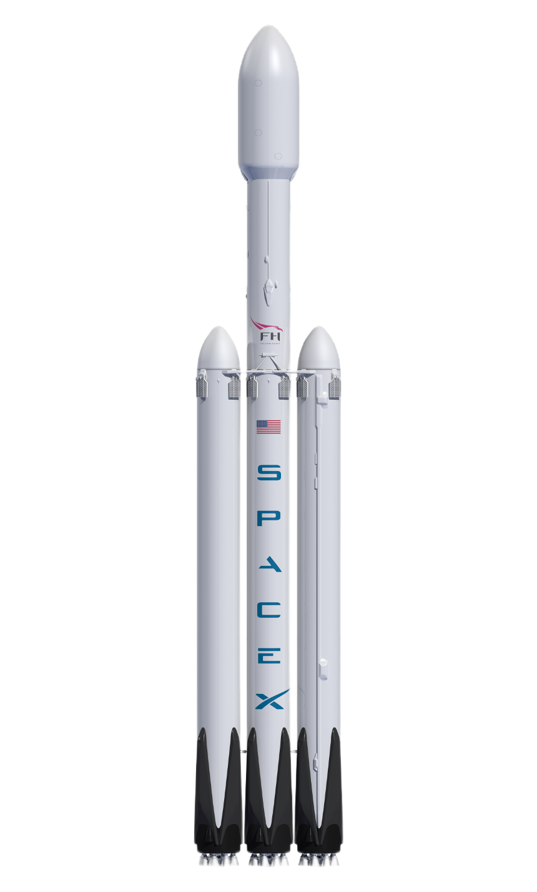
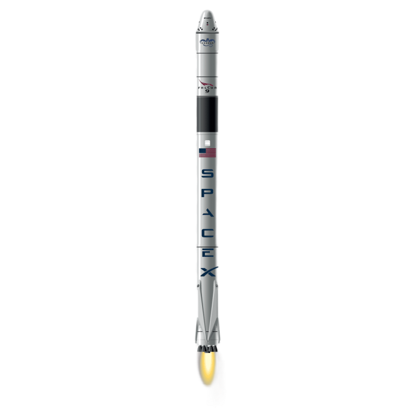

Главная Биография Проекты Контакты
Главная Биография Проекты Контакты
Проекты

Falcon Heavy
(букв. с англ. — «Тяжёлый „Сокол“») — американская ракета-носитель (РН)
сверхтяжёлого класса с возможностью повторного использования первой
ступени и боковых ускорителей, спроектированная и произведённая
компанией SpaceX, является одной из крупнейших ракет-носителей в
истории мирового космического ракетостроения наряду с «Сатурном-5»,
«Н-1», системой «Спейс Шаттл» и «Энергией». Относится к семейству
Falcon и разработана на основе ракеты-носителя Falcon 9, используя её
существенно видоизменённую первую ступень в качестве центрального блока
(I ступени), а также две дополнительные модифицированные первые ступени
Falcon 9 в качестве боковых ускорителей (так называемой «нулевой
ступени»).
На момент
первого запуска — самая грузоподъёмная, мощная и тяжёлая
ракета-носитель из находящихся в эксплуатации, и была таковой до
запуска в 2022 году SLS. Также Falcon Heavy принадлежит абсолютный
рекорд по числу маршевых двигателей (28, в том числе 27 одновременно
работающих) среди успешно летавших ракет-носителей. С инженерной точки
зрения несомненный интерес представляет то, что если Falcon Heavy
успешно «наработает статистику удачных пусков» — это будет означать
опровержение общепринятой среди специалистов-ракетчиков ещё с середины
1970-х гг. точки зрения, что добиться приемлемой надёжности
«сверхмногодвигательной» ракеты-носителя технически невозможно — и, как
следствие, переворот в технических концепциях создания тяжёлых и
особенно сверхтяжёлых РН.
Первый
(испытательный) запуск Falcon Heavy был успешно произведён 6 февраля
2018 года. Первый коммерческий пуск были произведен 11 апреля 2019 года.
Falcon
9, ( falcon с англ. — «сокол») — семейство одноразовых и частично
многоразовых ракет-носителей тяжёлого класса серии Falcon американской
компании SpaceX. Falcon 9 состоит из двух ступеней и использует в
качестве компонентов топлива керосин марки RP-1 (горючее) и жидкий
кислород (окислитель). Цифра «9» в названии обозначает количество
жидкостных ракетных двигателей Merlin, установленных на первой ступени
ракеты-носителя.
Первая
ступень Falcon 9 может быть повторно использована, на неё установлено
оборудование для возврата и вертикального приземления на посадочную
площадку или плавающую платформу autonomous spaceport drone ship. 22
декабря 2015 года, после запуска на орбиту 11 спутников Orbcomm-G2,
первая ступень ракеты-носителя Falcon 9 FT впервые успешно приземлилась
на площадку Посадочной зоны 1. 8 апреля 2016 года, в рамках миссии
SpaceX CRS-8, первая ступень ракеты Falcon 9 FT впервые в истории
ракетостроения успешно приземлилась на морскую платформу «Of Course I
Still Love You». 30 марта 2017 года, та же ступень, после технического
обслуживания, была запущена повторно в рамках миссии SES-10 и снова
успешно приземлилась на морскую платформу. Всего в 2017—2019 годах было
осуществлено 24 повторных запуска первой ступени. В 2020 году, в 21 из
26 запусков первая ступень использовалась повторно, одна из ступеней
использовалась 5 раз в течение года и две ступени были запущены в
седьмой раз. В 2021 году, только в двух запусках из 31 использовалась
новая первая ступень, одна из ступеней была запущена в одиннадцатый раз.
Falcon 9
используется для запусков геостационарных коммерческих спутников связи,
научно-исследовательских космических аппаратов, грузового космического
корабля Dragon 2 в рамках программы Commercial Resupply Services по
снабжению Международной космической станции, а также для запуска
пилотируемого корабля Crew Dragon. Рекордной по массе полезной
нагрузкой, выведенной на низкую опорную орбиту (НОО), является связка
из 54 спутников Starlink версии 1.5 суммарным весом в 16 700
килограмм[3]. Рекордом на геопереходной орбите (ГПО), является Intelsat
35e — 6761 кг[a].

Dragon (с
англ. — «дракон»), также известный как Dragon 1 — американский частный,
частично многоразовый беспилотный транспортный космический корабль,
разработанный компанией SpaceX в рамках программы НАСА Commercial
Orbital Transportation Services (COTS) и предназначенный для доставки
полезного груза на Международную космическую станцию (МКС) и возврата
его из космоса на Землю.
Необходимость
в новых грузовых кораблях возникла у США по причине прекращения полётов
Шаттлов. На 2020 год (начиная с 2012 года) Dragon является единственным
в мире грузовым космическим кораблём, возвращающим грузы с МКС на
Землю[4][5][3]. Начиная с 2010 года корабль был запущен 22 раза;
cуммарно на станцию кораблями Dragon доставлено около 43 тонн полезного
груза и возвращено на Землю около 33 тонн[6].
Всего было
изготовлено 13 кораблей Dragon, в девяти миссиях корабль использовался
повторно: 3 капсулы летали дважды и 3 капсулы — трижды. Одна из миссий,
SpaceX CRS-7, завершилась неудачей из-за аварии ракеты-носителя.
7 марта 2020
года стартовала миссия SpaceX CRS-20, которая стала последним полётом
корабля Dragon первого поколения; начиная со второй фазы контракта CRS
(миссия SpaceX CRS-21) компания SpaceX перешла на использование
грузовой версии корабля Dragon 2.